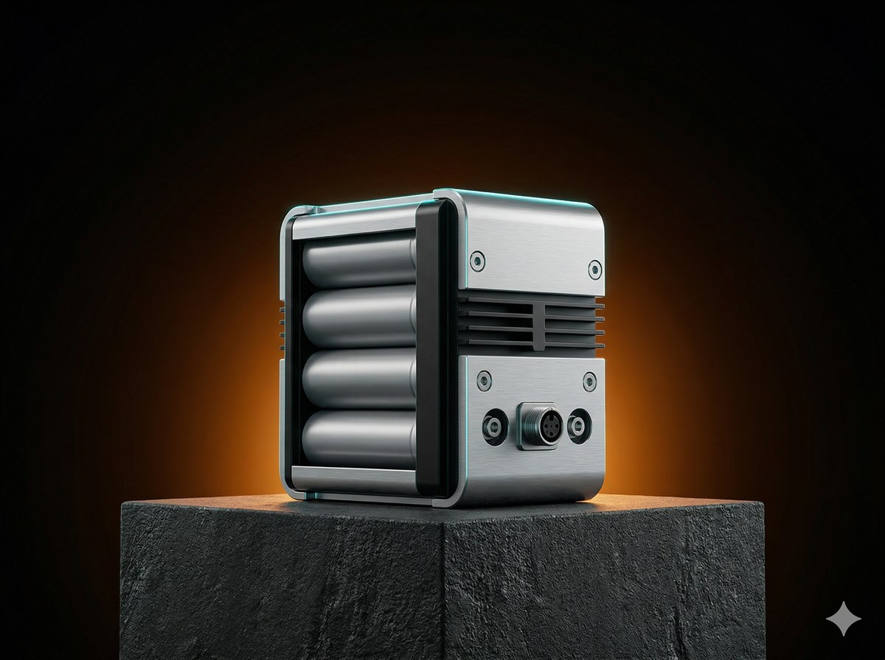
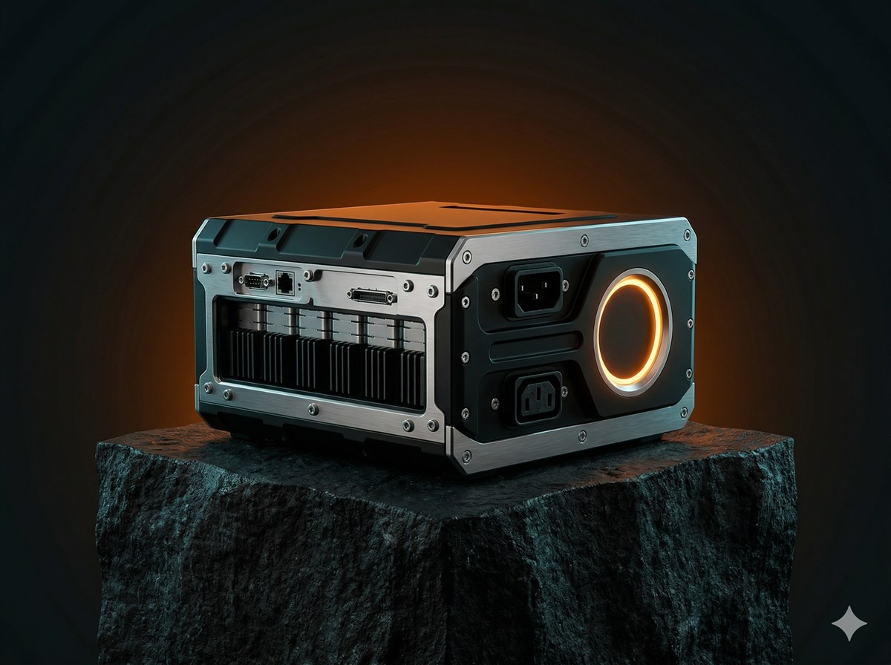
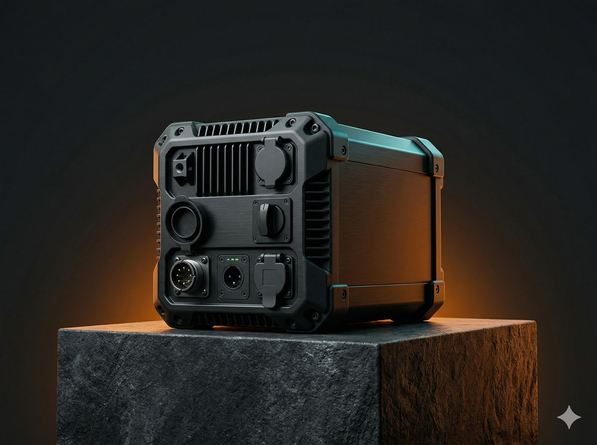
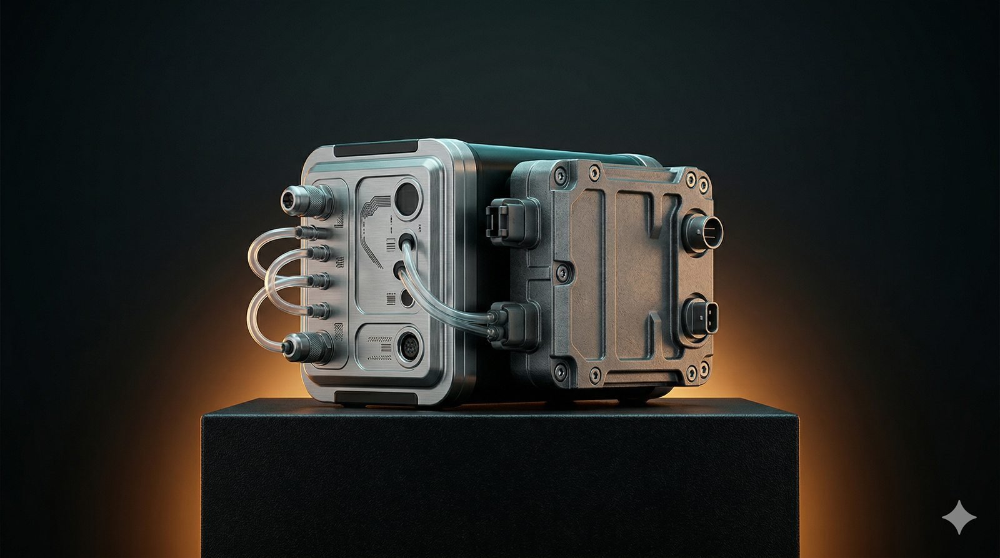
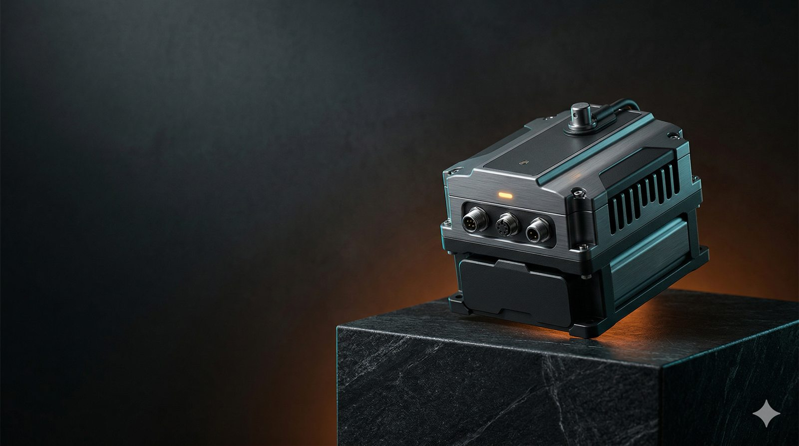
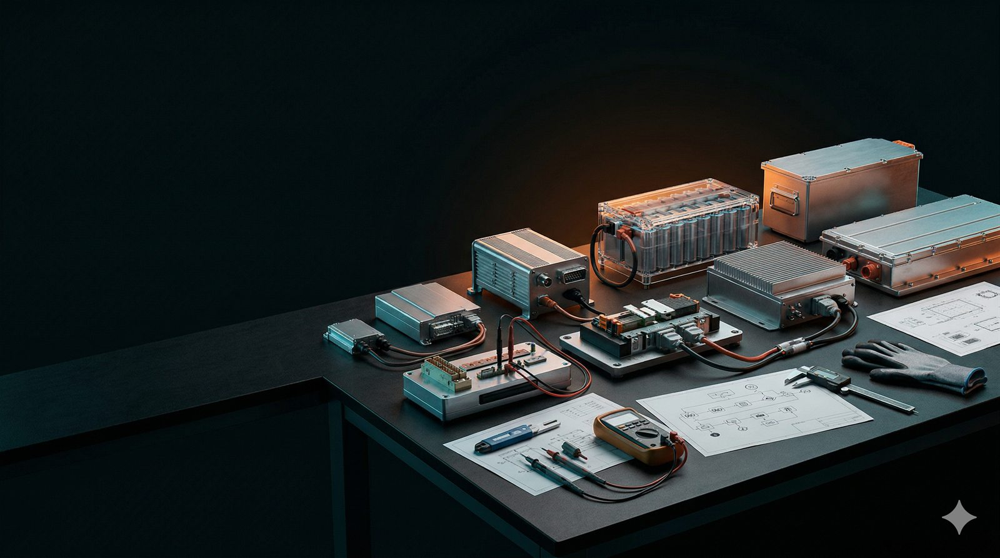
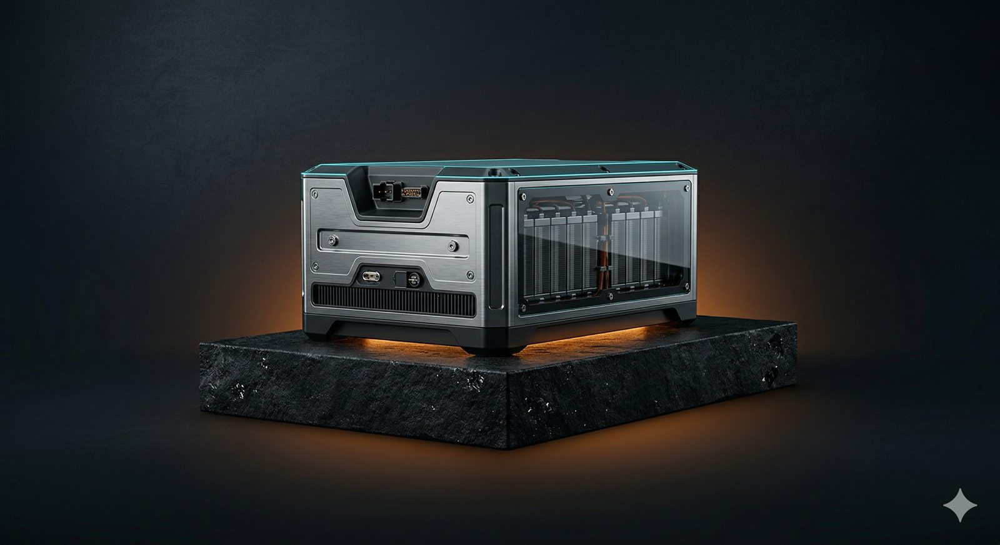

工业级供能方案
为高强度场景打造 更稳的能源底座
泰坦供能聚焦工业自动化、医疗检测、物联网终端与户外设备， 通过长寿命电芯、稳定输出架构与快速选型支持，帮助项目从样机到量产更快落地。
48h 首轮建议
样品验证到量产协同
从功耗评估、样品验证到量产导入，用更短的决策链把项目推进节奏压缩清楚。
工业供能模组
在线展示
真实产品风格的首页主视觉
把高端工业模组的材质、接口与能量环细节直接放进首屏，让用户更快理解产品气质。
能源状态面板
在线
多场景稳定输出
从低温到高频唤醒场景，输出曲线更平稳。
峰值电流校核
环境验证
量产切换
工业自动化
医疗检测
物联网终端
户外设备
安防监测
工业自动化
医疗检测
物联网终端
户外设备
安防监测
客户信任区
保密项目不堆 Logo，也能把合作可信度讲清楚
我们不展示客户名称，但把常见合作团队、决策关注点和交付承诺公开出来，让访问者先看到合作方式，再决定要不要继续聊。
Delivery Trust
项目真正关心的是节奏、风险和换型成本
先给建议，再决定是否进入样品验证。
功耗、环境和结构限制分层提示。
把验证回看、封装和批量切换压进同一节奏。
对外不公开品牌名，但对内会把验证逻辑、交付边界和下一步动作说清楚。
优先把供能稳定性和现场维护节奏讲透。
会先核对峰值瞬态、寿命和长期表现。
通常会同时评估脉冲输出和封装策略。
会先把工作温区、维护周期和余量算清楚。
不是只看型号，而是看能不能尽快推进项目。
需要更早冻结规格、接口和包装边界。
产品矩阵
围绕寿命、峰值与环境适配建立完整组合
不是把所有电池堆在一起，而是按使用场景拆出更清晰的选型路径。

Classic Core
超能经典系列
适合遥测终端、手持设备与中低频场景，主打耐用、稳定和成本平衡。
标称容量
2400-3200mAh
温度范围
-20°C 至 60°C
峰值负载
2.5A
- 低自放电，适合长待机
- 输出更稳，减少误触发
- 支持长周期备货管理

Titan Pulse
锂能专业系列
针对高频唤醒和脉冲负载设计，更适合物联节点与专业终端。
标称容量
1800-2800mAh
温度范围
-40°C 至 85°C
峰值负载
5.0A
- 峰值输出余量更足
- 低温和震动场景更稳
- 支持定制封装与接口

Prime Reserve
长续航旗舰系列
适合医疗监测、户外巡检与关键备份场景，优先保障长寿命和连续可靠性。
标称容量
3500-5200mAh
温度范围
-30°C 至 70°C
典型寿命
10 年+
- 高能量密度，缩小整机空间
- 支持安全防护与追溯
- 适合关键设备长期运行
参数模块
把选型关键参数做成可直接沟通的对比模块
先把客户最常问的容量、温区、峰值电流、寿命和封装能力摆出来，沟通效率会比单纯写文案高很多。
Selection Snapshot
项目先看这 5 项- 设备峰值电流决定是否需要脉冲型方案
- 工作温区会直接影响低温表现和寿命预估
- 维护周期和空间限制决定容量与封装策略
先分清项目更怕瞬时掉压，还是更怕维护过于频繁。
很多方案不是不能做，而是要先看结构和连接方式能不能接受。
把真实负载、环境回看和维护动作一起验证，后面会更稳。
如果你已经知道峰值电流、工作温区和维护周期，基本就能先判断该从哪一类系列开始看。
Series Comparison
产品参数对比
低功耗终端和常规工况，先看这组。
脉冲负载、低温和专业终端更优先。
医疗监测和关键备份场景更合适。
关键参数
超能经典
锂能专业
长续航旗舰
适配设备
遥测终端 / 手持设备
物联节点 / 专业终端
医疗监测 / 关键备份
标称容量
2400-3200mAh
1800-2800mAh
3500-5200mAh
峰值输出
2.5A
5.0A
3.2A
工作温区
-20°C 至 60°C
-40°C 至 85°C
-30°C 至 70°C
典型寿命
5-7 年
6-8 年
10 年+
封装能力
标准电芯 / 常规端子
定制接口 / 焊片 / Pack
安全防护 / 可追溯包装
核心技术
把性能参数翻译成实际业务收益
我们关注的不只是实验室里的漂亮数据，而是项目上线后能不能少返修、少中断、少换电。
稳定输出架构
通过更稳的放电曲线与负载响应，降低设备误报、重启与掉线概率。
环境适配能力
覆盖低温、振动、周期唤醒和户外部署等典型复杂场景。
项目协同交付
从选型建议、样品验证到量产切换，提供更清晰的项目节奏支持。
把峰值响应和放电曲线做稳，很多异常会在上线前就被拦下来。
不是等设备自己出问题，而是提前知道什么时候该换、该回看。
结构、接口和样品验证在前面就对齐，后面量产导入会轻松很多。
真正有用的技术表达，不是讲很多材料术语，而是把“会少掉哪些现场麻烦”讲清楚。
峰值电流校核
低温性能评估
结构与接口协同
Pack Architecture
结构、散热与接口布局一体化考虑
性能总览
Deployment Ready
输出稳定
99.92%
交期响应
48h
寿命优化
3.6x
适配行业
12+
建议从设备峰值电流、待机时长、工作温度和维护频率四个维度做选型。
应用场景
针对不同工作条件给出不同方案重点
同样是“续航要长”，工业传感器和医疗终端的判断标准并不一样。
工业自动化
强调持续稳定与维护便利，先把停机风险压下来。
把维护窗口、异常恢复和停线代价放进同一套判断逻辑。

医疗检测设备
优先供电可靠性和长期一致性，关键时刻更稳。

物联网终端
适配高频唤醒和无线传输场景，兼顾峰值与体积。
户外巡检设备
覆盖温差、震动与长时间离线环境，降低现场换电风险。
Project Flow 01 / 04
先把推进节奏讲清楚，再继续看结果、拆解与沟通收口
01 流程
02 结果
03 拆解
04 沟通
这一段先把输入、输出和下一节点说透，后面的案例判断才更顺。
交付流程
从评估到量产，把项目推进节奏说清楚
把“咨询一下”变成真正可执行的项目动作，减少反复沟通和不必要试错。

Project Board
把输入、输出和下一步放在同一块看板里
典型推进节奏
需求评估
确认设备功耗模型、使用周期、环境条件与结构限制。
样品验证
对比多种供电方案，在真实工作场景下校验续航与峰值响应。
量产导入
明确规格、包装、防护与追溯要求，平滑完成批量切换。
上线回看
把实际维护反馈、异常日志和寿命表现回收，给下一批优化留出窗口。
阶段交付包
每推进一步，都应该带走可执行内容
Project Flow 02 / 04
承接上一段流程，把典型项目结果翻成更直观的判断画面
01 流程
02 结果
03 拆解
04 沟通
这里开始从“怎么推进”切到“上线后会怎样”，让节奏自然往案例结果过渡。
典型项目结果
把“能不能做”变成“上线后会怎样”
不直接写客户名称，但把典型项目里最关心的目标、判断逻辑和交付结果讲清楚，让团队更快做决策。
首轮建议、样品验证和规格冻结都有明确窗口。
不是只给型号，而是把风险点和下一步动作一起交付。
结果怎么看
这三个案例，其实都在回答同一组判断题
表面上是工业、医疗和户外三类项目，真正决定方案方向的，仍然是业务代价、现场边界和验证动作。
先看最怕失去什么
是停线、误报、关键节点掉电，还是现场维护频次太高。
再看现场最难改什么
温区、体积、线束接口、离线时长，往往比“容量够不够”更先决定边界。
最后看验证要怎么排
把峰值、温差、寿命和维护节奏放进同一轮验证，项目推进会顺很多。
上线后常见变化
真正交付的不只是“能用”，而是项目推进会顺很多
把峰值、电量衰减和环境因素一开始就纳入验证，后面排查不会总在猜。
不是被动等到现场出问题，而是提前知道维护周期和补能边界。
把样品验证、接口限制和量产导入放在同一条线上，团队更容易对齐。
这也是为什么我们在案例区会一直重复“判断逻辑、验证动作、交付结果”这三个层次。

Case File 01
工业产线传感节点
先把停线风险压下来，再谈更长续航
这类项目通常会先校核峰值电流、唤醒频率和维护节奏，再决定容量、接口和封装策略。
项目关注
更少误报与掉线
交付重点
维护窗口更集中
- 先算功耗模型，再安排样品验证
- 把温差、震动和布线一起纳入判断
Case File 02
医疗检测终端
优先稳定一致性与关键时刻可靠供能
更关注长期使用一致性、峰值瞬态和关键节点不掉电。
Case File 03
户外巡检设备
把低温、离线和补能频次一起算清楚
先明确工作温区和维护周期，再决定是拉长续航还是增加峰值余量。
Case File 04
物联网监测网关
先把唤醒频率、离线时长和通信峰值一起算清楚
这类项目通常更看重低功耗待机和短时通信峰值之间的平衡，不是一味堆容量。
Case File 05
关键备电模块
把寿命、一致性和安全追溯一起纳入交付要求
更适合关键设备和应急备份场景，重点不是短期参数，而是长期可靠和维护可追溯。
Project Flow 03 / 04
从结果视角继续下钻，把单个项目拆到可执行动作层
01 流程
02 结果
03 拆解
04 沟通
这一段负责把判断逻辑讲透，最后再把这些边界回收到方案沟通入口。
Case Breakdown
工业产线传感节点 / 分布式部署项目
从“续航要长”拆回到功耗模型、峰值唤醒、停线代价和维护窗口。
案例详情模块
把一个项目从“需求描述”拆到“可执行动作”
真正的决策不是只看容量，而是先判断供能目标、风险来源和验证路径。下面这套拆法，就是我们跟项目组对齐时最常用的方式。
表面诉求是拉长换电周期，真正影响业务的是异常恢复成本和停线代价。
不能只看容量，功耗模型、线束限制和温区要一起评估。
把脉冲负载、低温表现和现场维护动作放进同一轮回看。
最终输出
一份能直接推进项目的建议包
- 供能方案建议：容量、峰值余量、接口和封装边界
- 验证路径清单：样品测试重点、环境回看和异常恢复场景
- 推进节奏说明：首轮反馈、样品窗口和规格冻结节点
Project Flow 04 / 04
把前面的约束、风险和节奏统一收口，进入更高效的方案沟通
01 流程
02 结果
03 拆解
04 沟通
最后一段不只留联系方式，而是把整页前面讲的判断项真正收进表单里。
获取方案
把项目关键约束先收拢，再进入更高效的方案沟通
这块不再只是留联系方式，而是先把设备方向、阶段和环境约束收齐，让首轮建议更快落到可执行动作。
48h 首轮反馈
支持打样验证
量产切换协同
Fast Intake
字段不用一次填满，先把核心边界讲清楚，我们就能先给方向。
Response Flow
沟通通常会先走这 3 段，避免一上来把信息摊太散
先确认设备方向、功耗重点和环境约束，收出首版建议框架。
把峰值、温区和维护节奏放进同一轮回看，快速筛出更稳方案。
明确接口、封装、追溯和导入节奏，让量产切换更平滑。
准备清单
建议先带上这 3 类信息
- 设备类型与结构尺寸限制
- 峰值电流、工作周期与待机时长
- 部署环境，例如温差、震动或户外使用
信息不完整也没关系，先把主要限制讲清楚，我们会帮你继续收边界。